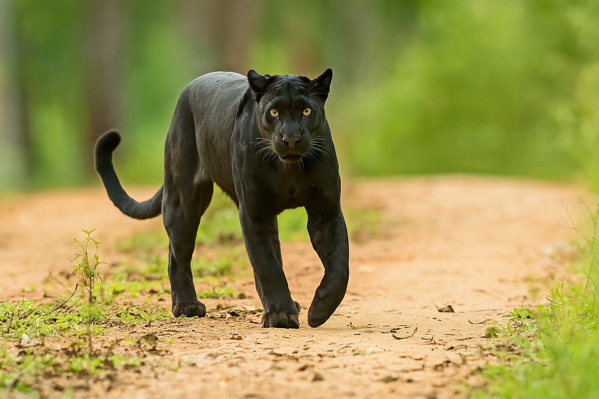

Pantera

Pantera arba juodoji pantera yra antrasis leopardo pavadinimas.
- Gentis: Panthera
- Kūno ilgis: 90 - 165 cm
- Masė: 30 - 90 kg.
- Gyvenimo trukmė: 15-17 m.
Remiantis genetiniais tyrimais, nuo 2008 m. šiai genčiai priskirtas Irbis arba snieginis leopardas (Panthera uncia), kurio ankstesnis lotyniškas pavadinimas buvo (Uncia uncia)